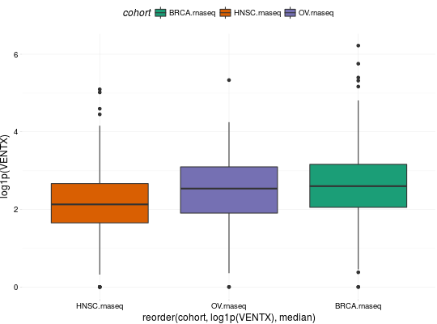
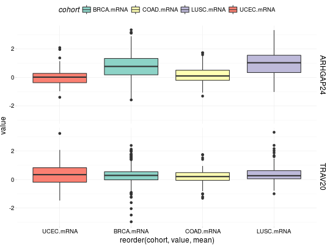
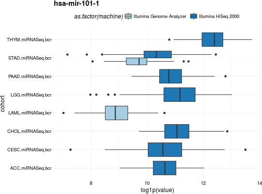

Gather Expressions for TCGA Datasets
Function gathers expressions over multiple TCGA datasets and extracts expressions for desired genes. See rnaseq, mRNA, RPPA, miRNASeq, methylation.
expressionsTCGA(..., extract.cols = NULL, extract.names = TRUE)
Arguments
- ...
- A data.frame or data.frames from TCGA study containing expressions informations.
- extract.cols
- A character specifing the names of columns to be extracted with
bcr_patient_barcode. IfNULL(by default) all columns are returned. - extract.names
- Logical, whether to extract names of passed data.frames in
....
Note
Input data.frames should contain column bcr_patient_barcode if extract.cols is specified.
Issues
If you have any problems, issues or think that something is missing or is not clear please post an issue on https://github.com/RTCGA/RTCGA/issues.
See also
RTCGA website http://rtcga.github.io/RTCGA/Visualizations.html.
Other RTCGA: RTCGA-package,
boxplotTCGA, checkTCGA,
convertTCGA, createTCGA,
datasetsTCGA, downloadTCGA,
heatmapTCGA, infoTCGA,
installTCGA, kmTCGA,
mutationsTCGA, pcaTCGA,
readTCGA, survivalTCGA,
theme_RTCGA
Examples
## for all examples library(dplyr) library(tidyr) library(ggplot2) ## RNASeq expressions library(RTCGA.rnaseq) expressionsTCGA(BRCA.rnaseq, OV.rnaseq, HNSC.rnaseq, extract.cols = "VENTX|27287") %>% rename(cohort = dataset, VENTX = `VENTX|27287`) %>% filter(substr(bcr_patient_barcode, 14, 15) == "01") %>% #cancer samples ggplot(aes(y = log1p(VENTX), x = reorder(cohort, log1p(VENTX), median), fill = cohort)) + geom_boxplot() + theme_RTCGA() + scale_fill_brewer(palette = "Dark2")#> #>## mRNA expressions library(tidyr) library(RTCGA.mRNA) expressionsTCGA(BRCA.mRNA, COAD.mRNA, LUSC.mRNA, UCEC.mRNA, extract.cols = c("ARHGAP24", "TRAV20")) %>% rename(cohort = dataset) %>% select(-bcr_patient_barcode) %>% gather(key = "mRNA", value = "value", -cohort) %>% ggplot(aes(y = value, x = reorder(cohort, value, mean), fill = cohort)) + geom_boxplot() + theme_RTCGA() + scale_fill_brewer(palette = "Set3") + facet_grid(mRNA~.) + theme(legend.position = "top")#> #>#> Warning: Removed 2 rows containing non-finite values (stat_boxplot).## RPPA expressions library(RTCGA.RPPA) expressionsTCGA(ACC.RPPA, BLCA.RPPA, BRCA.RPPA, extract.cols = c("4E-BP1_pS65", "4E-BP1")) %>% rename(cohort = dataset) %>% select(-bcr_patient_barcode) %>% gather(key = "RPPA", value = "value", -cohort) %>% ggplot(aes(fill = cohort, y = value, x = RPPA)) + geom_boxplot() + theme_dark(base_size = 15) + scale_fill_manual(values = c("#eb6420", "#207de5", "#fbca04")) + coord_flip() + theme(legend.position = "top") + geom_jitter(alpha = 0.5, col = "white", size = 0.6, width = 0.7)## miRNASeq expressions library(RTCGA.miRNASeq) # miRNASeq has bcr_patienct_barcode in rownames... mutate(ACC.miRNASeq, bcr_patient_barcode = substr(rownames(ACC.miRNASeq), 1, 25)) -> ACC.miRNASeq.bcr mutate(CESC.miRNASeq, bcr_patient_barcode = substr(rownames(CESC.miRNASeq), 1, 25)) -> CESC.miRNASeq.bcr mutate(CHOL.miRNASeq, bcr_patient_barcode = substr(rownames(CHOL.miRNASeq), 1, 25)) -> CHOL.miRNASeq.bcr mutate(LAML.miRNASeq, bcr_patient_barcode = substr(rownames(LAML.miRNASeq), 1, 25)) -> LAML.miRNASeq.bcr mutate(PAAD.miRNASeq, bcr_patient_barcode = substr(rownames(PAAD.miRNASeq), 1, 25)) -> PAAD.miRNASeq.bcr mutate(THYM.miRNASeq, bcr_patient_barcode = substr(rownames(THYM.miRNASeq), 1, 25)) -> THYM.miRNASeq.bcr mutate(LGG.miRNASeq, bcr_patient_barcode = substr(rownames(LGG.miRNASeq), 1, 25)) -> LGG.miRNASeq.bcr mutate(STAD.miRNASeq, bcr_patient_barcode = substr(rownames(STAD.miRNASeq), 1, 25)) -> STAD.miRNASeq.bcr expressionsTCGA(ACC.miRNASeq.bcr, CESC.miRNASeq.bcr, CHOL.miRNASeq.bcr, LAML.miRNASeq.bcr, PAAD.miRNASeq.bcr, THYM.miRNASeq.bcr, LGG.miRNASeq.bcr, STAD.miRNASeq.bcr, extract.cols = c("machine", "hsa-mir-101-1", "miRNA_ID")) %>% rename(cohort = dataset) %>% filter(miRNA_ID == "read_count") %>% select(-bcr_patient_barcode, -miRNA_ID) %>% gather(key = "key", value = "value", -cohort, -machine) %>% mutate(value = as.numeric(value)) %>% ggplot(aes(x = cohort, y = log1p(value), fill = as.factor(machine)) )+ geom_boxplot() + theme_RTCGA(base_size = 13) + coord_flip() + theme(legend.position = "top") + scale_fill_brewer(palette = "Paired") + ggtitle("hsa-mir-101-1")#> #>